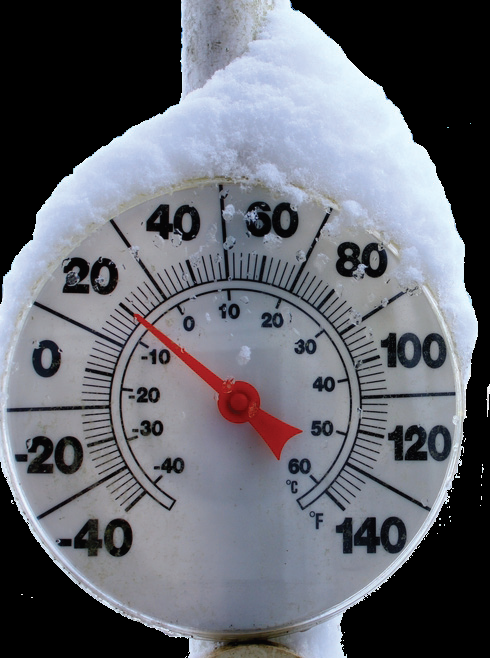
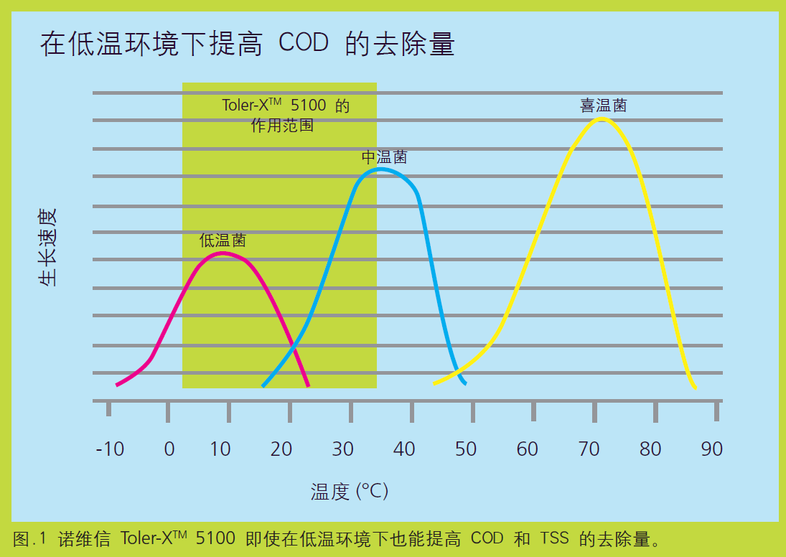

某食品厂污水处理系统冬季处理效率下降，不能达标排放。诺维信的工程师建议下使用低温COD去除菌TolerX 5100，污水处理生化系统适应了冬天低温环境，并确保COD去除率不会下降， 以符合相应的法规遵循。
表1显示了来自用TolerX 5100 进行播种的食品污水处理厂的数据。除了较冷月份外，该污水处理厂的性能指标良好。随着温度下降而进入冬季，维持剂量会施用于曝气池。与污水处理厂未使用TolerX 5100 时的前一年相比，出水BOD降低88%，出水 TSS 降低48%。

温度较低时，工业污水处理厂往往苦于维持污水处理的效果。生物活性和温度密切相关。水温降至 15 °C 以下时，污水处理效果会急剧下降，遵循法规也会成为真正的难题。为了达到污水处理效果，生物群落必须包含在低温时可以发挥作用的微生物，并能够处理大量的有机物。污水处理池系统因表面积增加且缺乏操控手段存在较大风险。
使用低温COD去除菌 TolerX 5100 的优势
TolerX 5100: 因其在低温下适用性而专门选择的微生物TolerX 5100 有助于污水处理厂达到许可要求，并提高污水处理厂在低温时的效率。它包含一种好寒性（喜冷）微生物的混合制剂，并在低至 2 °C 时处于活动状态。X 5100 中的菌株具有很强的有机物降解能力，并可用于大量的工业设施。
